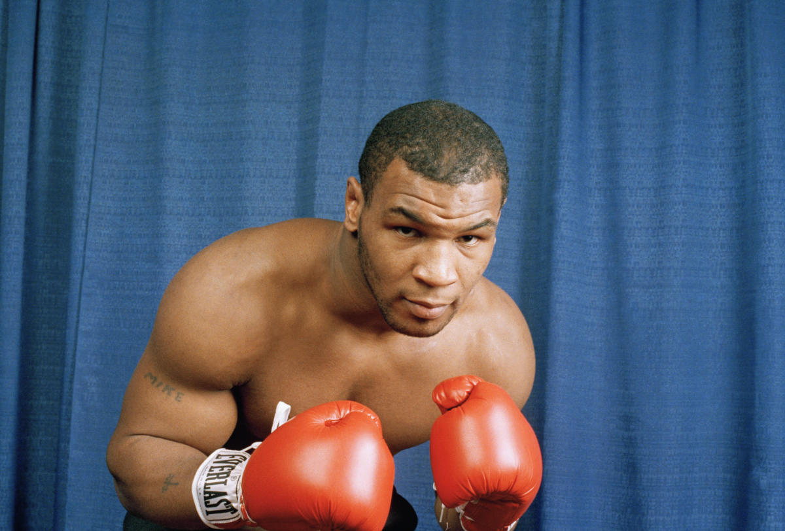
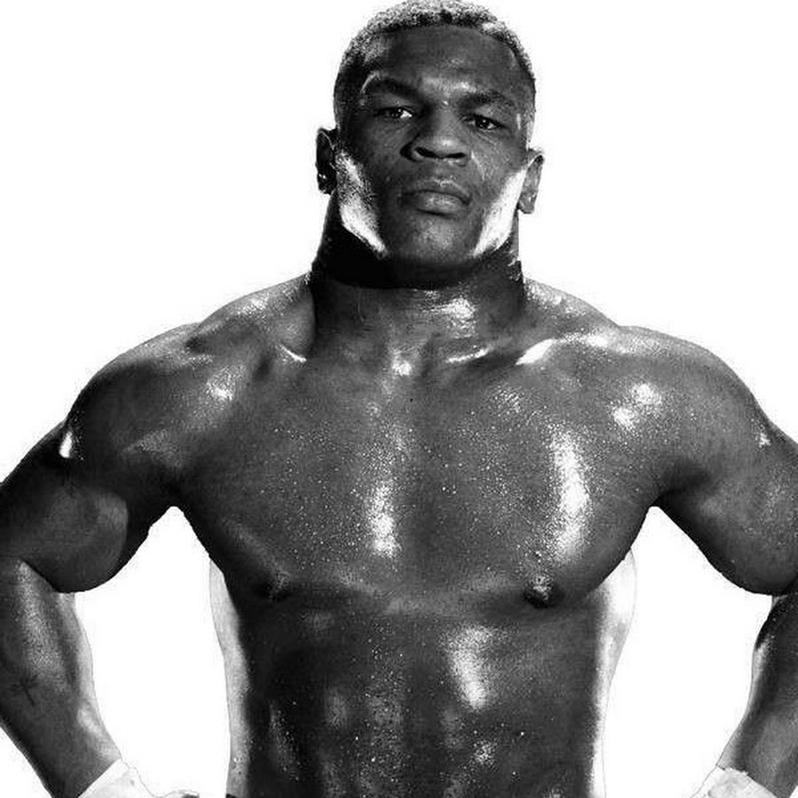

Майк Та́йсон
англ (Mike Tyson)

Тайсон, Майк
Майкл Дже́рард Та́йсон (англ. Michael Gerard Tyson; род. 30 июня 1966, Браунсвилл, Бруклин, Нью-Йорк, США) — американский боксёр-профессионал, выступавший в тяжёлой весовой категории; один из самых известных и узнаваемых боксёров в истории. Национальный Олимпийский чемпион США среди юниоров в первом тяжёлом весе (1982). Абсолютный чемпион мира в тяжёлой весовой категории среди профессионалов (1987—1990). Чемпион мира по версиям WBC (1986—1990, 1996), WBA (1987—1990, 1996), IBF (1987—1990), The Ring (1988—1990). Линейный чемпион (1988—1990). Победил 11 бойцов за титул чемпиона мира в тяжёлом весе. Самый высокооплачиваемый боксёр в истории (до Флойда Мейвезера)
«Самый перспективный боксёр» 1985 года по версии журнала «Ринг». Лучший боксёр вне зависимости от весовой категории по версии журнала «Ринг» (1989—1990). «Боксёр года» по версии журнала «Ринг» (1986, 1988). «Боксёр года» по версии BWAA (1986,1988). «Спорт личность года» по версии BBC (1989). Иностранный спортсмен года по версии BBC (1989). Лучший спортсмен за рубежом (1987—1989) по версии BBC. Рекордсмен по количеству наград «событие года» по версии журнала «Ринг»: 4 раза получал награду: 1995 — Возвращение Тайсона, 1997 — Укус во время боя с Эвандером Холифилдом, 1998 — Восстановление Тайсона, 2002 — Скандальная пресс-конференция Тайсон — Льюис. «Самый жестокий человек в истории спорта» и «Самый сильный нокаутёр в истории» по версии канала ESPN.

Включён в Международный зал боксёрской славы (2011), во Всемирный зал боксёрской славы (2010), в зал славы бокса штата Невада (2013), в Зал Славы WWE (2012). На 49-й ежегодной конвенции WBC в Лас-Вегасе, Майк Тайсон был внесён в Книгу Рекордов Гиннеса и в торжественной обстановке получил два сертификата: за наибольшее количество самых быстрых нокаутов и за то, что стал самым молодым чемпионом мира в тяжёлом весе.
Является обладателем многих мировых рекордов, не побитых по сей день: самый молодой чемпион мира в тяжёлом весе (в 20 лет 144 дня); самый молодой абсолютный чемпион мира (в 21 год); боксёр, потративший наименьшее время с момента дебюта на завоевание титулов чемпиона и абсолютного чемпиона мира в тяжёлом весе (1 год 8,5 месяцев и 2 года 5 месяцев соответственно); первый и единственный абсолютный чемпион, который завоевал три основных титула последовательно один за другим; самый высокооплачиваемый тяжеловес в истории; единственный, защитивший титул абсолютного чемпиона (WBC, WBA, IBF) 6 раз подряд; наибольшее количество самых быстрых нокаутов (9 нокаутов менее, чем за 1 минуту); самый быстрый нокаут на юношеских олимпийских играх (8 секунд).
.jpg)
Имеет три судимости. В 1992 (за изнасилование приговорён к 6 годам тюрьмы, из которых отсидел 3), в 1998 (за избиения людей, которые столкнулись с его машиной; приговорён к 3,5 месяцам лишения свободы) и 2008 годах (сутки тюрьмы за употребление наркотиков и вождение автомобиля в состоянии наркотического опьянения). В юном возрасте также отбывал наказания в детских колониях. Женат третьим браком. Отец восьми детей. В 2009 году трагически погибла его четырёхлетняя дочь. Исповедует ислам и имеет арабское имя Мали́к Абду́л Ази́з (англ. Malik Abdul Aziz). Является веганом.
Основатель промоутерской компании Iron Mike Promotions. Кроме бокса Майк известен своей актёрской карьерой. Принял участие в написании сценария к автобиографическому фильму «Тайсон» (1994), снялся в двух документальных фильмах «По ту сторону славы» (2003) и «Майк Тайсон» (2009). В 2016 году снялся в одной из главных ролей фильма «Ип Ман 3». Прозвище — «Железный Майк».